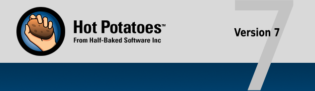
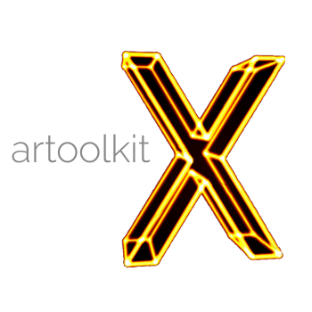

Herramientas de software para el docente
Producción de material gráfico:
Inkscape
Esta es una aplicación multiplataforma open source de creación y edición de gráficos vectoriales. Sus características son de orden profesional, aunque de fácil uso, por lo que puede ser utilizado tanto para fines artísticos como para fines técnicos. Por ser gráficos vectoriales, permite crear imágenes de gran calidad y escalables sin pérdida, por lo que es ideal para materiales didácticos en línea. Es compatible con una gran cantidad de formatos, aunque su formato nativo es una versión propia de SVGFuente: Inkscape, 2020.
GIMP
Esta aplicación (que responde al acrónimo GNU Image Manipulation Program, en español Programa de Manipulación de Imagen GNU), es un editor de fotografías e imágenes open source de índole profesional. Es altamente personalizable, por lo que se puede reprogramar de forma personal o pueden agregársele complementos de terceros.Fuente:GIMP, 2020.

Medibang Paint Pro
Esta es una aplicación gratuita de dibujo y boceto digital, con énfasis en la elaboración de cómics (y por tanto materiales didácticos de tipo gráfico). Actualmente sólo se encuentra disponible para Windows y Mac OSX. Sus características son de tipo profesional, aunque es fácil de utilizar. Por lo tanto, incluye múltiples brochas, el uso de capas y guías, fondos preestablecidos, entre muchos otras. Además, su procesamiento ligero le permite instalarse y utilizarse en la mayoría de computadorasFuente:Medibang, 2020.
Producción de audio y video:
Audacity
Esta es una aplicación open source para la grabación y edición de audio multipista multiplataforma. Este se encuentra en la mayoría de los principales idiomas existentes, y permite el uso de gran variedad de códecs, formatos, y mezcla de audio, además de la inclusión de recursos adicionales propios o de terceros.Fuente:Audacity, 2020.
Kdenlive
Esta aplicación (que responde al acrónimo de KDE Non-Linear Editor, en español Editor no-lineal de KDE) es una aplicación multiplataformas (originaria de GNU/Linux) open source destinada a la edición y montaje de material audiovisual. Esta permite la edición de acceso aleatorio a través del uso de capas, y es compatible con la mayoría de formatos y códecs de audio y video. Posee además la capacidad de convertir videos a otros formatos, según sea la necesidad de la calidad/tamaño del archivo resultante, así como se le pueden adicionar recursos en línea desde el Kdenlive Add-on Installer.Fuente: Kdenlive, 2020.
Juegos en el sitio:
Hot Potatoes
Esta es una suite de aplicaciones lúdicas gratuita, que permite crear pruebas educativas digitales de selección múltiple, respuesta corta, pareos, ordenamientos, relleno de espacios y oraciones mezcladas, así como juegos de tipo crucigrama. Permite la exportación de objetos SCORM para plataformas educativas, salvo la versión de Java.Fuente: Hot Potatoes, 2020.

Editor de texto para sitio Web:
Visual Studio Code
Es una aplicación gratuita de edición de código simplificado. Permite hacer aplicaciones simples y desarrollo web más sencillo, por lo que su principal cualidad es su ciclo rápido de codificación-compilación-depuración. Es ideal para quienes desean generar aplicaciones o páginas web pero no son programadores expertos.Fuente: Microsoft, 2020.
Almacenamiento del proyecto:
Github
Es una plataforma de desarrollo en la nube, con modalidades open source y pagas. Permite administrar proyectos informáticos (así como páginas web), y permite el trabajo colaborativo de forma sincrónica y organizada. Además, permite la adquisición de componentes adicionales para facilitar la codificación a través del Github Marketplace.Fuente: Github, 2020.
Realidad Aumentada:

ARToolkitX
Este proyecto es una colección de herramientas de software que ayudan a resolver problemas y casos fundamentales de la realidad aumentada, incluyendo la capacidad de alinear las coordenadas del espacio virtual con el espacio real (registro geométrico), y calzar la apariencia de los objetos creados en el entorno virtual con el entorno real (registro fotométrico). Está diseñado tanto para programadores expertos como para usuarios nuevos sin experiencia, por lo que es muy intuitivo y fácil de usar.Fuente: ARToolkitX, 2020.
ARCore
Esta es la plataforma gratuita de Google para el diseño y construcción de experiencias basadas en la realidad aumentada. Se centra fundamentalmente en dispositivos Android (que son los que más utilizan los estudiantes), por lo que le permite a estos percibir e interactuar con el entorno. En algunos casos tiene compatibilidad parcial con iOS. Es más técnico que el ARToolkitX, pero de igual forma es intuitivo y utilizable para la generación de materiales didácticos. Se basa en el uso de la cámara del teléfono, a partir del rastreo de movimiento, el entendimiento del entorno y estimación lumínica.Fuente: Google, 2020.
Fichas didácticas
.jpeg)
El uso de estas tarjetas o fichas se ve en un marco de presentación que promueve la repetición y la práctica como una forma
de aprendizaje, aunque está relacionado con la memoria misma, también implica un análisis de la información disponible;
Enlaces de interés:
- ARToolkit. (2018). Introduction to artoolkitX. Recuperado de: https://github.com/artoolkitx/artoolkitx/wiki/Introduction-to-artoolkitX
- Audacity. (2020). About. Recuperado de: https://www.audacityteam.org/about/
- Github. (2020). Built for developers. Recuperado de: https://github.com/
- Inkscape. (2020). Features. Recuperado de: https://inkscape.org/about/features/
- Kdenlive. (2020). Features. Recuperado de: https://kdenlive.org/en/features/
Referencia Bibliográficas:
- ARToolkitX. (2020). What is artoolkitX?. Recuperado de: http://www.artoolkitx.org/
- Audacity. (2020). Free, open source, cross-platform audio software. Recuperado de: https://www.audacityteam.org/
- GIMP. (2020). The free & open source image editor. Recuperado de: https://www.gimp.org/
- Github. (2020). Logos. Recuperado de: https://github.com/logos
- Google. (2020). ARCore overview. Recuperado de: https://developers.google.com/ar/discover
- Hot Potatoes. (2020). Hot Potatoes Homepage. Recuperado de: https://hotpot.uvic.ca/
- Inkscape. (2020). About. Recuperado de: https://inkscape.org/about/
- Kdenlive. (2020). Kdenlive. Recuperado de: https://kdenlive.org/en/
- Medibang. (2020). MediBang Paint Pro The desktop version of the MediBang Paint series. Recuperado de: https://medibangpaint.com/en/pc/
- Microsoft. (2020). Visual Studio Code FAQ. Recuperado de: https://code.visualstudio.com/docs/supporting/faq